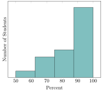
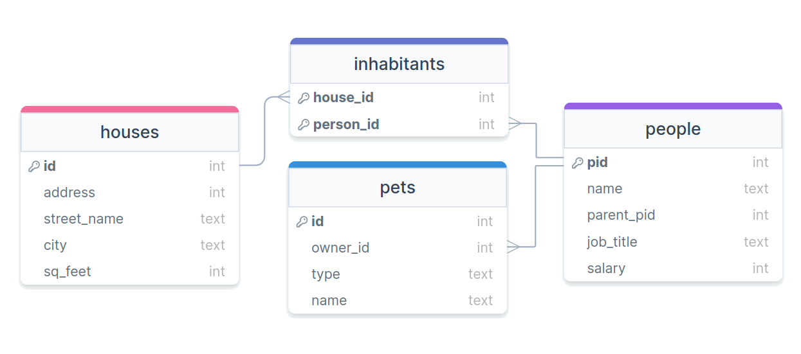

Jed Rembold
Wednesday, November 16, 2022

CREATE INDEX bdindex ON to_index_or_not (birthday);SELECT SUM(favorite_num)
FROM to_index_or_not
WHERE name ILIKE '%Ben%'SELECT name, birthday
FROM to_index_or_not
WHERE favorite_num = 8SELECT name
FROM to_index_or_not
WHERE birthday = 'Jan 5, 2014'SELECT MIN(name)
FROM to_index_or_not
WHERE birthday < 'Nov 2, 2022'INSERT INTO tab3 VALUES
(7, -4, 'Katy', '2022-02-14');ALTER TABLE tab3
ADD FOREIGN KEY (H)
REFERENCES tab1 (A);UPDATE tab2
SET E = -4.83;DELETE FROM tab1
WHERE A = 'Katy';ALTER TABLE tab3
ALTER COLUMN G
SET DATA TYPE INT;ALTER TABLE tab1
ADD PRIMARY KEY (C);Part A
SELECT tab2.D, AVG(tab3.F)
FROM tab3
RIGHT JOIN tab2
ON tab2.D = tab3.I
GROUP BY tab2.D;Part B
SELECT COUNT(*) - MAX(tab1.B + tab3.F)
FROM tab1
FULL OUTER JOIN tab3
ON tab1.B = tab3.F;Part C
SELECT AVG(tab1.B) + COUNT(tab2.D)
FROM tab1
LEFT JOIN tab2
ON tab1.C = tab2.E
JOIN tab1 AS ttab1
ON ttab1.B > tab1.C;
How many houses have been foreclosed, having nobody living within them?
What are the names of the 'CEO'’s who own
more than 3 pets?
What is the full address (number, street, and city) of the household with the greatest number of pet dogs?
How many people are living with a parent?
shp2pgsql on all operating systems
shp2pgsql utilizes several flags to control
its behavior
-I → sets up a GIST index on the
geometry column-s → specifies a specific SRID-W → specifies a particular encoding if
needed (sometimes necessary for location names)shp2pgsql -I -s SRID -W ENCODING SHAPEFILE.SHP TABLE_NAMEBy itself, shp2pgsql will just
generate SQL
You could save or copy that output and then run it in your database, but it can be more useful to pass that SQL directly into your database as it is created
This can be done with the | (pipe)
operator
All together then, the command would look like below (all on one line)
shp2pgsql -I -s SRID -W ENCODING SHAPEFILE.SHP TABLE_NAME | psql -d DATABASE -U postgres
Shapefiles will usually create geometry objects, which you could then cast to geography as needed
ST_AsText() function on
any geometry (or geography) object to output its WKT representation
SELECT ST_AsText(geom)
FROM table_name
LIMIT 1;ST_AsText to grab results for quick
visualizationST_Collect to aggregate an
entire column of singular geometries into one Multi-geometry object for
each of representationST_Area(poly) will return the area of
the provided polygon. This will be in SRID specified units if geometry
or square meters if geographyST_Within(point, poly) will return a
True/False as to whether the given point lies within the provided
polygon
ST_Intersects(geom1, geom2) will return
a True/False if there exists an intersection between the two
geometriesST_Intersection(geom1, geom2) will
return a new geometry representing the intersection between the two
geometries